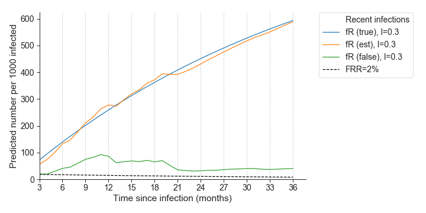

flowchart LR START[(HIV+ blood samples)] M1[???] M2[???] M3[???] END[(TSI estimates)] START --> M1 --> M2 --> M3 --> END
HIV-phyloTSI:
IAVI workshop
Andrea Brizzi
2023-11-12
Intrahost diversity and recency of infections
Why do we care about recency?
incidence estimation
identifying sub-populations sufferinng from recent infections are happening.
determining generation intervals.
but getting data is hard:
longitudinal cohorts as gold standard
alternatives which are discussed in this section
What is recency? Natural history of HIV

Lab assays to identify infection stages
Based on the quality and type of immune response.
- Less sensitive Enzyme Immunoassays, antigen test (Janssen?…)
- Lag-Avidity (Duong2012?)
- Bed-CEIA (Parek2011?)
source: UW medicine
This is great, but specificity and sensitivity are hard to control:
- individual level variation, confounding subtypes, ART status…
An alternative unit of time: genetic diversity
Case study: recency in Botswana
Ragonnet-Cronin et al. (2022) developed recency classifier
- end goal: characterizing undiagnosed cases in Botswana (Bhebhe et al. (2022))
- data: demographic data, some testing data and individual level NGS
- how: train ML model on known recent and known chronic infections, and use it to classify unknown.
comments on model:
- still required cohort study, and not directly generalisable to other contexts.
- simple measures of diversity: entropy and mean pairwise distance
- these alone are not enough to provide good classification
Case study: recency in Botswana

Ragonnet-Cronin et al. (2022)
HIV-phylo TSI
Golubchik et al. (2022) tackles weaknesses of previous approach:
- Pre-trained: no need for expensive training data.
- Captures more complex measures of divergence.
- Comparatively low false recency rate using exclusively NGS data.
HIV-phylo TSI: training data
sequences from PANGEA and BEEHIVE with known infection range.
HIV-phylo TSI: intrahost diversity
choice of predictors based on viral diversification following infection.
- “Accumulated” mutations on codons.
- “Depth” of host-specific subtree in phylogeny. (LRTT)
But why these measures of intrahost diversity?

HIV-phylo TSI model
different signal in different part of the genome. How to combine predictors?
- take average over gene
- let the model pick up the informative covariates.
Best performing set of features chosen through LOOCV
Regressor performs well as a classifier too, but FRR (~10%)
HIV-phylo TSI performances: bias
- bias is low in infections < 9 years.
- range of individual-level errors can be quite wide.
For applications:
- estimates are not precise at the individuals level BUT
- there is signal in medians taken among subpopulation.
HIV-phyloTSI performances: robustness to subtype
model bias was close to 0 for all subtypes included in the dataset.

HIV-phyloTSI performances: robustness to ART (?
Some individuals in the training data reported prior ART use.
followed pattern
BUT: small sample size
AND: no predictions for suppressed individuals.

HIV-PhyloTSI bioinformatics pipeline
Demistifying the process
- In this section, want to describe processes and data manipulation carried out by the pipeline.
- Not the actual implementation of the pipeline.
Main steps:
- Next Generation Sequencing (NGS)
- Constructing phylogenies MANY!
- Analysing phylogenies
Next Generation Sequencing
- simultaneous sequencing of multiple viral particles to capture within-host diversity
- PANGEA protocols: Gall (Gall et al. 2012) and Bonsall et al.(Bonsall et al. 2018)
- TSI pipeline starts with the outputs produced by
shiver(Wymant et al. 2018):*.bam,*.ref.fasta

Grouping & multiple sequence alignment
- Many sequences, many hosts, many genome windows -> group by host!
- aligning to compare “apples to apples”: MAFFT (Katoh 2002)
::: {.footer} The figure was generated with AliView :::
Inferring phylogenies
- Phylogenies are made through IQTREE by group and window through IQTREE (Nguyen et al. 2015)
The image was generated with FigTree
Analysing phylogenies
phyloscanner(TOCITE) summarizes each tree through summary statistics:patStats.csv: contains LRTT, number of tips, etc…
Minor Allele Frequencies
- \(\text{MAF} = ( 1 - \text{proportion of majority bases}) / \text{depth}\)
- Evaluated at first 2 codos positions (
MAF12c) and/or third codon position (MAF3c)
HIV-phyloTSI
Summary
graph LR
subgraph S1["Primary Data Patients"]
direction TB
I01[(*.bam)]
I02[(*ref_fasta)]
I02b[(*BaseFreqs_WithHXB2.csv)]
end
subgraph S2["Reference Sequences"]
I03[(*.fasta)]
end
subgraph S3["Multiple Sequence Alignment"]
P1(mafft)
O1[(*.fasta)]
end
subgraph S4["Constructing Phylogenies"]
direction TB
P2(IQTREE)
O2[( *.iqtree )]
end
subgraph S2b["Computing MAFs"]
direction TB
P2b(script)
O2b[(maf.csv)]
end
subgraph S5["Analysing phylogenies"]
direction TB
P3( PhyloscannerR )
O3[(*PatStats.csv)]
end
subgraph S6["Obtain TSI estimates"]
direction TB
P4( HIV-phyloTSI )
O4[(TSI.csv)]
end
classDef Red fill:#F84E68
class S3,S4 Red
classDef Orange fill:orange
class S5,S6 Orange
I02 --> P1
I01 --> P1
I02b --> P2b --> O2b --> P4
I03 --> P1
P1 --> O1
O1 --> P2
P2 --> O2
O2 --> P3
P3 --> O3
O3 --> P4
P4 --> O4
Note
Steps run for each group and window are shown in red, while those running by group in orange
But what is HIV-phyloTSI doing?
- ML algorithm, in particular Random Forest.
HIV-PhyloTSI obtaining TSI estimates
Plan
- divide in group of 4, each goup with a machine running Linux or MacOS
- introduction of sample dataset
- installing dependencies
- running hiv-phyloTSI
- if there is time, visualising outputs in R.
Preliminary Tools
There are two tools that will make our lives easier:
Installing dependencies
The ‘ingredients’ to run the analyses are: the ML algorithm; the data and the code dependencies. The below code chunk allows you to download everything that is needed for the analyses.
# change directory to where you want to install HIV-phyloTSI repo
cd $HOME/git # this is where I install git packages
# cd $HOME && mkdir git && cd git
# clone directories necessary to run the analysis
# BDIs code and workshop materials
git clone git@github.com/BDI-pathogens/HIV-phyloTSI.git
git clone git@github.com/abriz97/HIV-phyloTSI-workshops.git
# store paths to 2 above directories
DIR_WORKSHOP="$(pwd)/HIV-phyloTSI-workshops"
DIR_PROGRAM= "$(pwd)/HIV-phyloTSI"
# install python dependencies for HIV-phyloTSI and load the environment
conda env create -f HIV-phyloTSI-workshops/hivphylotsi.yml
conda activate hivphylotsiNote
When interacting with a terminal, learning the power of the $ operator is key. The operator allows to evaluate variables (eg. $HOME) or to evaluate commands surrounded by brackets ( eg. $(pwd)).
Running the algorithm
Once all the ingredients are there, we can start cooking. It is relatively simple to run the analyses, even though we need to be precise in the way we specify the paths to the input data.
# Run HIV-phyloTSI on input data.
python $DIR_PROGRAM/HIV-phyloTSI.py \
-d $DIR_PROGRAM/Model \
-p $DIR_WORKSHOP/HIV-phyloTSI-workshops/input/ptyr1_patStats.csv \
-m $DIR_WORKSHOP/HIV-phyloTSI-workshops/input/phsc_input_samples_maf.csv \
-o $DIR_WORKSHOP/HIV-phyloTSI-workshops/output/ptyr1_tsi_workshop.csv
# print header of output to make sure it exists:
head $DIR_WORKSHOP/HIV-phyloTSI-workshops/output/ptyr1_tsi_workshop.csvNote
The first 2 lines point to $DIR_PROGRAM because they refer to the code we want to use. On the other hand, the bottom 3 lines refer to the input data and output paths, and this is why they point to $DIR_WORKSHOP.
Visualising results
As a first step, it is helpful to visualize the results and check whether they make sense. I provide some R functions and scripts to help the process, which can be found in the github repository:
- script:
$DIR_WORKSHOP/src/workshop_analyses.R - functions:
$DIR_WORKSHOP/src/R/workshop_R_helpers.R
Again, we can use conda to install the necessary packages:
I will be showing snippets of the above code together with the plots they produce.
You can reproduce the steps by opening up the script in RStudio.
Predictors used

Evaluation on seroconverters
Histogram of estimates TSIs
Possible follow-up analyses
Plan
Simple stratification by age, sex, and other covariates of interest.
what NOT to do: changes in TSI by year of infection
How I personally usesd them for the MM paper.
mention Hinch’s work on Generation intervals.
simple ideas:
- aggregate by (wide) age groups and compare medians (maybe bootstap to show uncertainty of medians)
Simulation study:
In simulated settings, the prevalence of recent infections is well estimated, despite at least 2% of recent classifications are wrong. 
Golubchik et al. (2022)
Pop ART ancillary


HPTN application:
References
Bhebhe, Lynnette, Sikhulile Moyo, Simani Gaseitsiwe, Molly Pretorius-Holme, Etienne K. Yankinda, Kutlo Manyake, Coulson Kgathi, et al. 2022. “Epidemiological and Viral Characteristics of Undiagnosed HIV Infections in Botswana.” BMC Infectious Diseases 22 (1): 710. https://doi.org/10.1186/s12879-022-07698-4.
Bonsall, David, Tanya Golubchik, Mariateresa De Cesare, Mohammed Limbada, Barry Kosloff, George MacIntyre-Cockett, Matthew Hall, et al. 2018. “A Comprehensive Genomics Solution for HIV Surveillance and Clinical Monitoring in a Global Health Setting.” Preprint. Genomics. https://doi.org/10.1101/397083.
Carlisle, Louisa A, Teja Turk, Katharina Kusejko, Karin J Metzner, Christine Leemann, Corinne D Schenkel, Nadine Bachmann, et al. 2019. “Viral Diversity Based on Next-Generation Sequencing of HIV-1 Provides Precise Estimates of Infection Recency and Time Since Infection.” The Journal of Infectious Diseases 220 (2): 254–65. https://doi.org/10.1093/infdis/jiz094.
Centers for Disease Control and Prevention (CDC). 2014. “Revised Surveillance Case Definition for HIV Infection–United States, 2014.” MMWR. Recommendations and Reports: Morbidity and Mortality Weekly Report. Recommendations and Reports 63 (RR-03): 1–10.
Fiebig, Eberhard W, David J Wright, Bhupat D Rawal, Patricia E Garrett, Richard T Schumacher, Lorraine Peddada, Charles Heldebrant, et al. 2003. “Dynamics of HIV Viremia and Antibody Seroconversion in Plasma Donors: Implications for Diagnosis and Staging of Primary HIV Infection.” AIDS 17 (13): 1871–79. https://doi.org/10.1097/00002030-200309050-00005.
Gall, Astrid, Bridget Ferns, Clare Morris, Simon Watson, Matthew Cotten, Mark Robinson, Neil Berry, Deenan Pillay, and Paul Kellam. 2012. “Universal Amplification, Next-Generation Sequencing, and Assembly of HIV-1 Genomes.” Journal of Clinical Microbiology 50 (12): 3838–44. https://doi.org/10.1128/JCM.01516-12.
Golubchik, Tanya, Lucie Abeler-Dörner, Matthew Hall, Chris Wymant, David Bonsall, George Macintyre-Cockett, Laura Thomson, et al. 2022. “HIV-phyloTSI: Subtype-Independent Estimation of Time Since HIV-1 Infection for Cross-Sectional Measures of Population Incidence Using Deep Sequence Data.” Preprint. HIV/AIDS. https://doi.org/10.1101/2022.05.15.22275117.
Katoh, K. 2002. “MAFFT: A Novel Method for Rapid Multiple Sequence Alignment Based on Fast Fourier Transform.” Nucleic Acids Research 30 (14): 3059–66. https://doi.org/10.1093/nar/gkf436.
Moyo, Sikhulile, Eduan Wilkinson, Vladimir Novitsky, Alain Vandormael, Simani Gaseitsiwe, Max Essex, Susan Engelbrecht, and Tulio De Oliveira. 2015. “Identifying Recent HIV Infections: From Serological Assays to Genomics.” Viruses 7 (10): 5508–24. https://doi.org/10.3390/v7102887.
Nguyen, Lam-Tung, Heiko A. Schmidt, Arndt Von Haeseler, and Bui Quang Minh. 2015. “IQ-TREE: A Fast and Effective Stochastic Algorithm for Estimating Maximum-Likelihood Phylogenies.” Molecular Biology and Evolution 32 (1): 268–74. https://doi.org/10.1093/molbev/msu300.
Ragonnet-Cronin, Manon, Tanya Golubchik, Sikhulile Moyo, Christophe Fraser, Max Essex, Vlad Novitsky, and Erik Volz. 2022. “Human Immunodeficiency Virus (HIV) Genetic Diversity Informs Stage of HIV-1 Infection Among Patients Receiving Antiretroviral Therapy in Botswana.” The Journal of Infectious Diseases 225 (8): 1330–38. https://doi.org/10.1093/infdis/jiab293.
Wymant, Chris, François Blanquart, Tanya Golubchik, Astrid Gall, Margreet Bakker, Daniela Bezemer, Nicholas J Croucher, et al. 2018. “Easy and Accurate Reconstruction of Whole HIV Genomes from Short-Read Sequence Data with Shiver.” Virus Evolution 4 (1): vey007. https://doi.org/10.1093/ve/vey007.